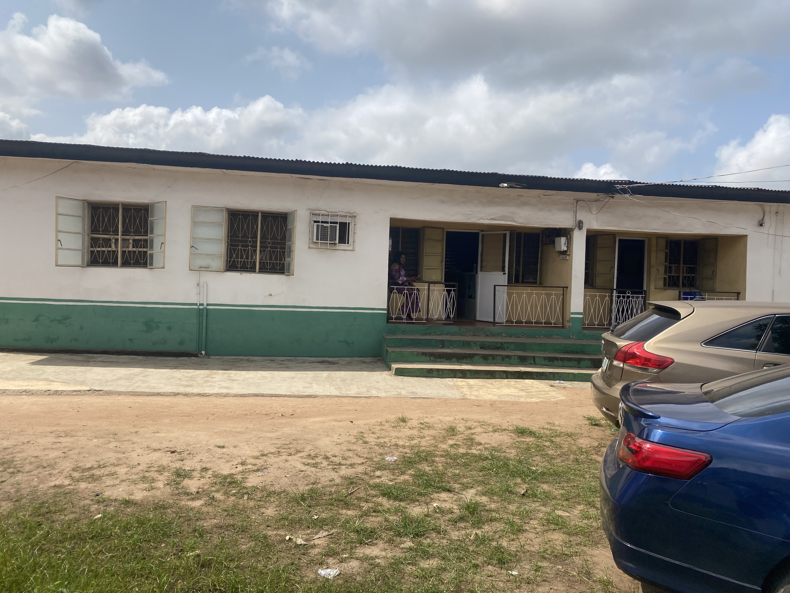
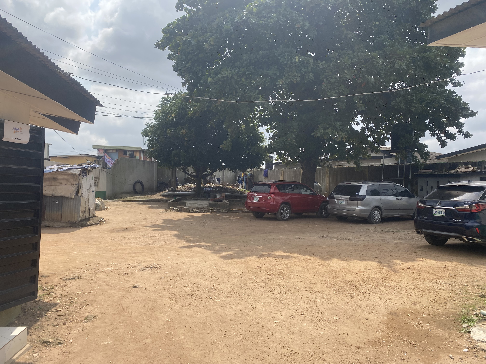

01
Convalescence Care
A comfortable environment for patients during recovery and rehabilitation.
↗A calm, comfortable environment designed to support care, recovery and wellbeing.


Olukayode Hospital is committed to providing a comfortable environment where patients can receive care and focus on recovery.
From our surroundings to the way we communicate, our approach is centered around comfort, cleanliness, accessibility and wellbeing.
A welcoming environment where comfort, support and recovery remain central.
A comfortable environment for patients during recovery and rehabilitation.
↗A supportive environment designed around patient comfort and wellbeing.
↗Clean and welcoming spaces designed to encourage rest and recovery.
↗Contact us directly for questions, information and available services.
↗We aim to provide an environment that makes patients and their families feel comfortable, informed and supported.
Comfortable patient environment
Clean and welcoming surroundings
Easy communication
Convenient location

Explore our environment and facilities.
Testimonial — This are legitimate Feed back from patient or families
You can call 0803 360 2308, send an email, or contact the hospital through WhatsApp.
Yes. Complete the enquiry form and continue the conversation through WhatsApp.
39 Adepeju Street, Mangoro, Ikeja, Lagos, Nigeria.
Visit the Gallery section and tap any photo to enlarge it.
Use the WhatsApp button or submit an enquiry through the form below.
Send us your question and continue the conversation with Olukayode Hospital through WhatsApp.
39 Adepeju Street, Mangoro, Ikeja, Lagos, Nigeria.